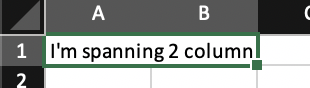
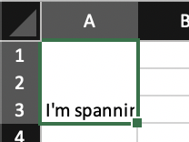
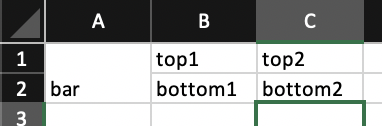

How To’s¶
Merging Cells¶
Merging cells is performed in the template, and tries to match the html spec
by making use of the existing colspan and rowspan attributes
that you can set on elements like <th> to change how many visual
cells they span across.
Note Currently merging cells are only supported in <th> elements.
Merging Cells Horizontally¶
<table>
<thead>
<tr>
<th colspan="2">I'm spanning 2 columns!</th>
</tr>
</thead>
</table>
Merging Cells Vertically¶
<table>
<thead>
<tr>
<th rowspan="3">I'm spanning 3 rows!</th>
</tr>
</thead>
</table>
Creating a “container” row¶
<table>
<thead>
<tr>
<th rowspan="2">bar</th>
<tr>
<th>top1</th>
<th>top2</th>
</tr>
<tr>
<td>bottom1</td>
<td>bottom2</td>
</tr>
</tr>
</thead>
</table>
Styling Cells¶
The styling of cells is done using the html class attribute on an element.
Using a style works similarly to the normal html. To apply a style “class”, you simply
set class="style-name" on an element.
You can compose a specific style from a number of more generic styles
by simply including all the styles separated by a space i.e. class="xl-centered xl-underlined".
Simlar to html, in the event 2 styles set the same style attribute, the last one to set a particular
style attribute “wins”.
Make use of default styles¶
The library exposes some basic builtin styles for convenience. To see the full set, for the current version of your library you can run:
>>> from schireson_excel.compose.style import default_styles
>>> print([style['name'] for style in default_styles])
['xl-centered', 'xl-underlined']
And to use those styles, the classes would
<tr class="xl-centered">
<td>c1</td>
<td>c2</td>
</tr>
Combining styles together¶
<tr class="xl-centered xl-underlined">
<td>c1</td>
<td>c2</td>
</tr>
Define custom styles¶
from schireson_excel.compose import Workbook
template = """
<body>
<div>
<span class="title">foo</span>
</div>
<div>
{% for column_name in column_names %}
<span class="xl-centered xl-underlined {{ loop.cycle('odd', 'even')}}">{{ column_name }}</span>
{% endfor %}
</div>
</body>
"""
styles = [
{"name": "title", "pattern_fill": {"patternType": "solid", "fgColor": "DDDDDD"}},
{"name": "odd", "pattern_fill": {"patternType": "solid", "fgColor": "FBEAFB"}},
{"name": "even", "pattern_fill": {"patternType": "solid", "fgColor": "DFE7F8"}},
]
workbook = Workbook(styles=styles)
workbook.add_sheet_from_template(template=template, data=dict(column_names=["bar", "baz", "bax"]))
workbook.compose("filename.xslx")